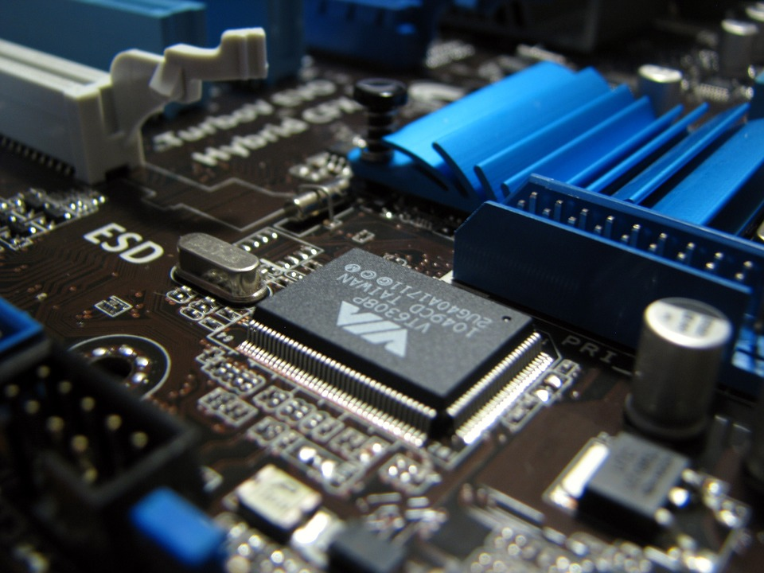

Looking to Build a PC?
You've come to the right place! My name is Logan, and this website will teach you how to put together a PC from scratch!
There are detailed steps with pictures to demonstrate. This is a long process, but it can be very rewarding for those that want to learn!
You do not need to have any prior knowledge to begin building. The guide on this site will provide you each required step, and if you already
know how to do something, you can easily move to the next part installation!
If you do not yet have parts, you can also find a cheap buying guide to build a functioning PC for web browsing and media (not gaming). There is also guide for a cheap gaming PC, if that is what you want to build!
Please visit the "Start Building!" page to begin, or visit the "About Me" page for more information on myself. Send any comments through the "Contact Me" page.
Good luck!
Below is a calculator for determining whether or not you can afford a mid-range gaming PC, using the budget you think will be enough.